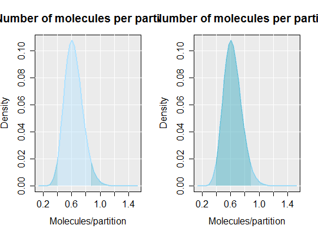
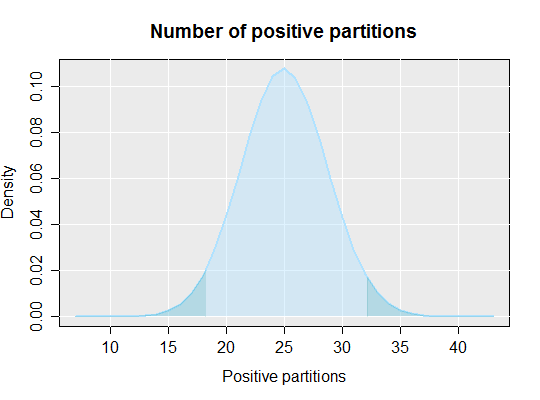

dpcr_density(k, n, average = FALSE, methods = "wilson", conf.level = 0.95, plot = TRUE, bars = FALSE, ...)
TRUE, calculates density of the average number of
molecules per partition. If FALSE, instead performs calculations for
the total number of positive molecules."wilson", "agresti-coull",
"exact", "prop.test", "profile", "lrt",
"asymptotic", "bayes", "cloglog", "logit",
"probit". Default value is "wilson". See Details.TRUE, plots density plot.plot function.Calculates and plots the density of the number of positive molecules or the average number of molecules per partition. Can be used for both array digital PCR and droplet digital PCR.
Brown, Lawrence D., T. Tony Cai, and Anirban DasGupta. Confidence Intervals for a Binomial Proportion and Asymptotic Expansions. The Annals of Statistics 30, no. 1 (February 2002): 160--201.
# Calculate the average number of molecules per partition and show the area # of the confidence interval (left plot) and the area within the # confidence interval par(mfrow = c(1,2)) dpcr_density(k = 25, n = 55, average = TRUE, methods = "wilson", conf.level = 0.95)method k n lambda lower upper 1 wilson 25 55 0.6061358 0.400855 0.8789302dpcr_density(k = 25, n = 55, average = TRUE, methods = "wilson", conf.level = -0.95)
method k n lambda lower upper 1 wilson 25 55 0.6061358 0.8789302 0.400855par(mfrow = c(1,1)) # By setting average to FALSE the total number of positive molecules is # calculated dpcr_density(k = 25, n = 55, average = FALSE, methods = "wilson", conf.level = 0.95)
method k n mean lower upper 1 wilson 25 55 25 18.1639 32.16252